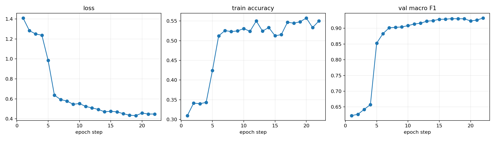
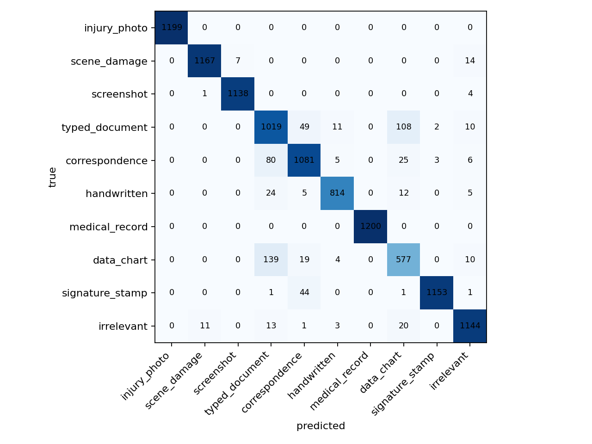
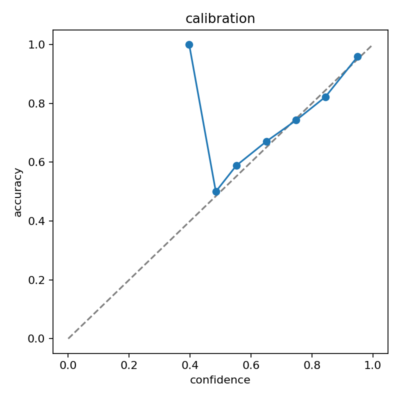
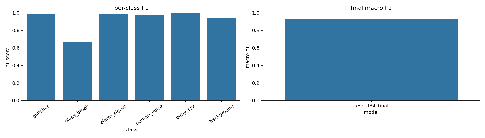
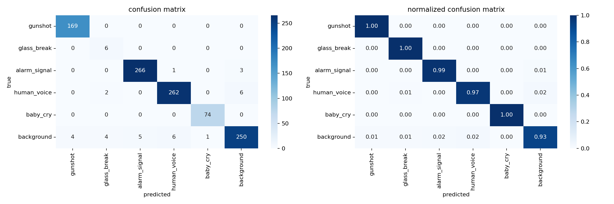
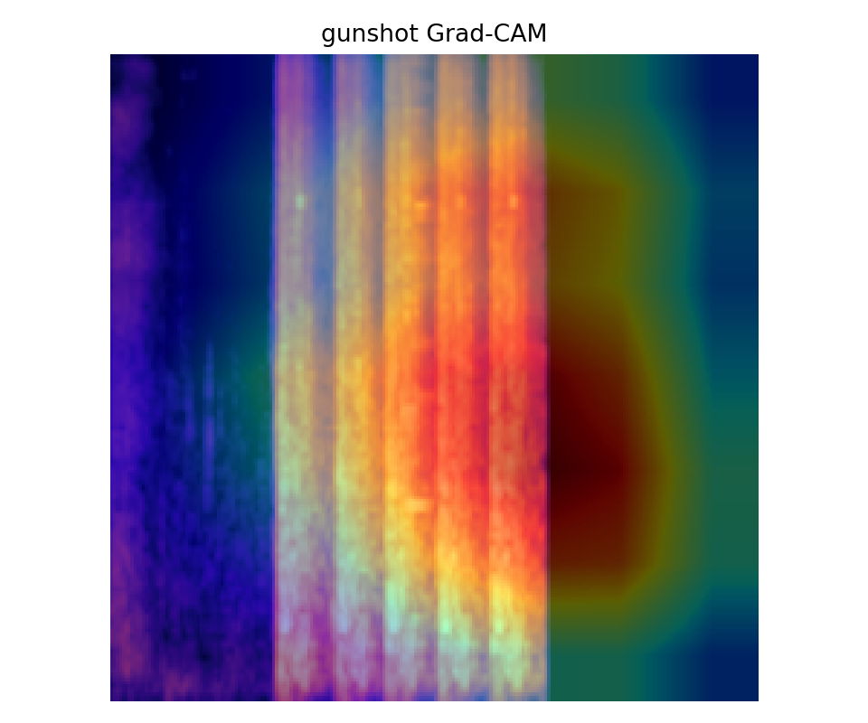

Dual Context Pipeline
One consolidated overview for the two completed systems: a document-processing legal workbench and an audio-context classifier. The page follows the same structure as the reference diagram: data collection, preprocessing, modelling branches, explainability, evaluation, integration, and deployment.
Combined Workflow
The two systems share the same design pattern: collect domain data, normalize inputs, train CNN classifiers with transfer learning and comparison baselines, inspect decisions with XAI, evaluate with calibrated metrics, and expose the model output to a local backend.
Branch A - Scratch baselines
Branch B - Pretrained production models
3. Explainability, evaluation, integration
PDF / Document Processing Model
The document system extracts structured visual context from legal/evidence documents, then sends that context to a Tunisia-focused retrieval and local LLM feedback layer.
Datasets scanned
Input document |-- Normalise file: PDF / image / DOCX / TXT / JSON / XLSX |-- Render pages or regions at 300 DPI |-- OCR and text extraction when text is present |-- CNN1 Content model - EfficientNetV2-S + GeM | |-- Labels: injury_photo, scene_damage, screenshot, typed_document, correspondence, handwritten, | | medical_record, data_chart, signature_stamp, irrelevant | |-- Output: content label, confidence, runner-up, full class scores, low-confidence flag |-- CNN2 Evidence model - ResNeXt-50 + CNN1 embedding | |-- Labels: primary_evidence, secondary_evidence | |-- Output: evidentiary role for legal review |-- CNN3 Quality model - EfficientNet-B0 | |-- Labels: clear, acceptable, degraded | |-- Output: readability/usability signal for OCR and verification |-- CNN4 Tamper model - EfficientNet-B1 | |-- Labels: authentic, tampered | |-- Output: authenticity risk label using calibrated threshold |-- Legal retrieval: Tunisia-prioritised local law knowledge + citations -> Structured JSON: text, visual predictions, model summary, retrieved legal context, legal feedback
Final document models
| Model | Macro F1 | Accuracy | AUC | ECE | Decision | Size |
|---|---|---|---|---|---|---|
| cnn1_contentinjury_photo, scene_damage, screenshot, typed_document, correspondence, handwritten, medical_record, data_chart, signature_stamp, irrelevant | 93.75% | 94.27% | 0.996 | 0.007 | logit_bias | 160.7 MB |
| cnn2_evidenceprimary_evidence, secondary_evidence | 94.81% | 94.99% | 0.990 | 0.008 | binary_threshold | 189.1 MB |
| cnn3_qualityclear, acceptable, degraded | 72.50% | 72.43% | 0.873 | 0.019 | logit_bias | 32.4 MB |
| cnn4_tamperauthentic, tampered | 93.84% | 93.84% | 0.984 | 0.010 | argmax | 51.8 MB |
Training design
- Two-phase transfer learning: frozen backbone warm-up followed by full fine-tuning.
- AdamW optimisation with differential learning rates and warm restart scheduling.
- Regularisation: dropout, label smoothing, weight decay, mixup, cutmix, gradient clipping, EMA model selection.
- Losses: focal loss, hierarchical focal loss for content, soft ordinal quality loss for quality labels.
- Post-training reliability: temperature calibration, test-time augmentation, decision threshold or logit-bias tuning where useful.
Audio Context Model
The audio system classifies event context from audio clips and produces segment-level evidence: event label, confidence, all class probabilities, secondary close events, acoustic features, optional transcripts, integrity flags, and XAI references.
Audio source counts
Input audio file |-- Load audio and resample to 32 kHz mono |-- Split into 3-second windows with 1.5-second hop for timeline coverage |-- Convert each window to log-mel spectrogram image |-- Final ResNet34 spectrogram CNN | |-- Labels: gunshot, glass_break, alarm_signal, human_voice, baby_cry, background | |-- Head: Dropout -> Linear(384) -> ReLU -> BatchNorm -> Dropout -> Linear(6) | |-- Reliability: temperature 0.70 + TTA shifts [-8, 0, 8] | |-- Output per segment: top event, confidence, all six probabilities, secondary close events |-- Optional speech/context modules | |-- Whisper transcription only when human_voice is detected | |-- Local speaker grouping; pyannote diarization if enabled and token exists | |-- Hugging Face emotion and deepfake/synthetic-voice checks if enabled | |-- Reference speaker matching when prototype audio is provided -> JSON report: timeline, integrity, transcripts, event counts, probabilities, XAI references
Final audio metrics
| Model | Macro F1 | Accuracy | AUC | ECE | Latency | Size |
|---|---|---|---|---|---|---|
| resnet34_finalgunshot, glass_break, alarm_signal, human_voice, baby_cry, background | 92.48% | 96.98% | 0.997 | 0.016 | 4.20 ms | 82.1 MB |
Training design
- Pretrained ResNet34 backbone trained on log-mel spectrogram images.
- Frozen phase: 4 epochs; full fine-tune phase: 16 epochs with separate head/backbone learning rates.
- Regularisation: dropout, BatchNorm head, label smoothing, weight decay, mixup, gradient clipping, early stopping.
- Inference reliability: temperature scaling, test-time spectrogram shifts, all-class probability output, ambiguous segment detection.
- Comparison notebook includes scratch CNN, final ResNet34, PANNs CNN14, MobileNetV3-Small, and EfficientNet-B0.
Audio split counts
| Split | Class counts |
|---|---|
| train | alarm_signal: 1260, baby_cry: 900, background: 1260, glass_break: 900, gunshot: 1000, human_voice: 1260 |
| val | alarm_signal: 270, baby_cry: 74, background: 270, glass_break: 6, gunshot: 169, human_voice: 270 |
| test | alarm_signal: 270, baby_cry: 74, background: 270, glass_break: 6, gunshot: 169, human_voice: 270 |
Explainability And Evaluation
The notebooks render the important inspection views inside the notebooks and also save artifacts for the final documentation. The selected XAI set matches the model families used: convolutional heatmaps and perturbation methods for CNNs.






Backend Integration
PDF legal workbench
pdf/project/models/storage/law_knowledge, chunking, vector/TF-IDF index, Tunisia-prioritised retrievalllama3.1:8b by default, survivor-centred fallback, citations, evidence gaps, next stepsAudio context demo
project/models/resnet34_final.ptFolder Coverage
PDF folder
pdf/document-processing-pipeline.ipynbpdf/document_model_comparison_light_vf.ipynbpdf/project/pdf/results/- Final model training/export notebook.
- Light comparison notebook with scratch and lightweight pretrained candidates.
- Local FastAPI + Ollama legal workbench.
- Saved model card, metrics, learning curves, confusion matrices, calibration, local XAI examples, integration schema.
Audio folder
audio-context-pipeline/audio_resnet_final_vf.ipynbaudio-context-pipeline/audio_model_comparison_vf.ipynbaudio-context-pipeline/project/audio-context-pipeline/audio_resnet_final_vf/- Final ResNet34 training/export notebook.
- Comparison notebook with scratch CNN, final ResNet34, PANNs, MobileNetV3, EfficientNet-B0.
- Local Gradio/FastAPI audio demo.
- Saved metrics, learning curve, confusion matrix, calibration, XAI examples, final checkpoint.